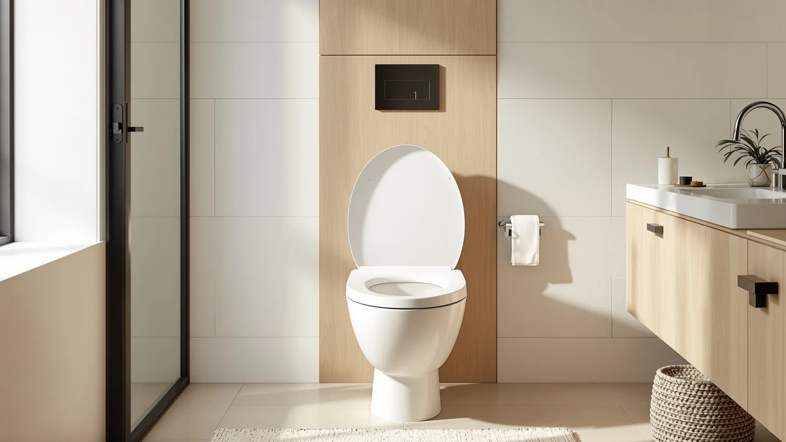

Best How to Clean Toilet Seat Cover (2026) | Best Toilet Seats
Prices and picks verified as of August 2026. Independent, reader-supported reviews.


Things to Know Before You Buy
- A full deep clean of a toilet seat cover takes about 30 minutes; a maintenance wipe takes two.
- Chlorine bleach yellows plastic covers over time. A hydrogen peroxide or quat-based disinfectant does the same job without the damage.
- Disinfectants need their labeled contact time, usually 4 to 10 minutes wet, before they kill anything.
- The hinge area holds most of the grime and odor, and you can only reach it by removing the seat.
- Fabric lid covers go in the washing machine: cold water, gentle cycle, air dry.
Knowing how to clean toilet seat cover surfaces the right way keeps your bathroom sanitary and stops the slow yellowing that ruins a white seat within a year. The cover, meaning the lid and the seat ring beneath it, collects more aerosolized spray than you would expect, and a quick pass with toilet paper does not remove it. The full job takes about 30 minutes and under $15 in supplies, and most of that money stays in your cabinet for the next dozen cleanings.
This method works on plastic, enameled wood, and fabric covers, with the fabric exception noted in step 2. You will remove the cover first, wash it, disinfect it with proper contact time, scrub the hinge area that quick cleanings skip, and reinstall it dry. Plan the deep clean once a month for a busy family bathroom, backed by a two-minute disinfectant wipe two or three times a week.
What You'll Need
- Supplies: mild dish soap, an EPA-registered disinfectant spray, and baking soda for stubborn toilet seat cover stains
- Tools: a soft-bristle brush (an old toothbrush works) and two microfiber cloths, plus rubber gloves
Step 1: Remove the cover and clear your workspace
Put on rubber gloves and clear anything off the toilet tank. If your cover is a fabric lid cover, stretch the elastic band off the lid and set it aside for step 2. For a standard plastic or wood seat, find the two hinge caps at the back, pop them open with your thumbnail, and loosen the bolts underneath while holding the nuts steady from below. Seats with quick-release hinges, like most current Bemis and Kohler models, let you skip the bolts and slide the whole toilet seat cover off in one motion.
Lay the cover on an old towel next to the tub. Removing the cover instead of cleaning it in place gives you the underside of the hinges, and that hinge channel holds more grime than the rest of the seat combined. While the seat is off, wipe the exposed porcelain rim with a disinfectant wipe so you reinstall onto a clean base.
Step 2: Wash the cover with dish soap and warm water
Fill a bucket with warm water and add a few drops of mild dish soap. Wipe both sides of the seat cover with a soapy microfiber cloth, working from the cleanest areas toward the hinge end so you do not drag grime across the surface. Dish soap breaks down the body oils, hairspray film, and cleaning-product residue that a dry wipe leaves behind.
For yellowed patches or dried-on spots, mix baking soda with a spoonful of water into a paste, spread it over the stain, and let it sit for ten minutes before wiping it away. Skip scouring powder and abrasive pads on a plastic cover, because they cut micro-scratches into the glossy finish that trap dirt and make the next cleaning harder. Fabric covers take a different route here: machine wash on a cold, gentle cycle and air dry.
Step 3: Disinfect every surface and let it sit
Spray an EPA-registered bathroom disinfectant across the top, the underside, and the edges of the toilet seat cover. Then read the label for the stated contact time, usually four to ten minutes, and keep the surface visibly wet for that entire window. A spray you wipe off after ten seconds cleans the surface but sanitizes almost nothing.
Hydrogen peroxide and quaternary ammonium sprays disinfect a seat cover without the yellowing risk that chlorine bleach carries on plastic. If bleach is all you have, dilute it to about a third of a cup per gallon of water, keep it off painted wood seats, and never combine it with any ammonia-based cleaner in the same session, since the two produce toxic chloramine gas.
Step 4: Scrub the hinges and mounting hardware
Dip a soft-bristle brush or old toothbrush in the soapy water and work it around the hinges, the bolt holes, and the rubber bumpers on the underside of the seat cover. These crevices sit closest to the bowl and catch the most spray, yet a flat cloth never reaches into them. Two minutes of brushing here does more for bathroom odor than any amount of wiping the flat surfaces.
Inspect the bolts and nuts while you have the brush out. Metal hardware shows rust early, plastic nuts crack with age, and catching either now beats dealing with a wobbly seat later. If your seat has soft-close hinges, brush gently around the damper cylinders and keep them out of standing water, since the dampers are not built for a soak.
Step 5: Rinse, dry, and reinstall the cover
Rinse the whole seat cover with clean water until no soap slick remains, then dry it with your second microfiber cloth. Cleaner residue left on the plastic turns sticky and attracts dust within a day or two, which undoes the work faster than skipping a week of cleaning would.
Set the cover back on the porcelain, drop the bolts through, and tighten the nuts until the seat stops shifting side to side, then stop, because overtightening cracks plastic nuts. Snap the hinge caps closed, rinse your gloves, and note the date somewhere you will see it. A full removal like this once a month, plus the quick weekly wipe, keeps a toilet seat cover looking new for years.
Common Mistakes to Avoid
The most damaging habit is reaching for undiluted bleach every time the toilet seat cover looks dingy. Chlorine bleach oxidizes plastic and, with repeated use, produces the same permanent yellow tint you were trying to scrub away. It also strips the finish on painted wood seats. Save bleach for rare disinfection jobs, dilute it, and rinse it off completely.
Scrubbing with abrasive pads runs a close second. Scouring powder leaves micro-scratches in the glossy finish of a plastic cover, and a melamine sponge pressed hard does the same. Those scratches read as dullness within a few months and give bacteria more surface to grip, so each cleaning after that works a little worse.
Wiping disinfectant off immediately wastes the product entirely. The label lists a contact time for a reason, and cutting it short means you cleaned the seat without sanitizing it. Cleaning around the hinges instead of under them makes a similar mistake: the grime that generates most of the odor sits in the hinge channel, and it stays there until you remove the seat.
Last one: closing a wet seat cover. Trapped moisture between the cover and the porcelain feeds mildew rings on the underside, the one spot guests smell before they see. Dry the seat before you close the lid.
Our Top Picks
Cleaning extends the life of any toilet seat cover, but plastic that has yellowed through or cracked at the hinges is past saving. If your deep clean revealed that kind of damage, these three replacement seats wipe clean fast and cost less than a plumber's service call.

Editor's Pick
1M Family Toilet Seat Patented
One seat serves adults and potty-training kids, and its smooth surface wipes clean in seconds with the method in this guide.
$39.99
Check Price on Amazon
Best Value
Quick Flip Toilet Seat with
The flip-down toddler seat tucks away when adults need the toilet, and the design leaves the hinge area easy to reach at cleaning time.
$54.99
Check Price on Amazon
Premium Choice
BEMIS 500EC 390 Toilet Seat
A plain, sturdy Bemis wood seat whose lift-off hinges let you remove the entire cover in one motion and wash it at the sink.
$16.64
Check Price on AmazonHow often should you clean a toilet seat cover?
Wipe the seat and lid with a disinfectant two or three times a week in a family bathroom, and do the full remove-and-scrub deep clean once a month.
Can you use bleach on a toilet seat cover?
Occasionally, and only diluted, about a third of a cup per gallon of water.
Frequently Asked Questions
How often should you clean a toilet seat cover?
Wipe the seat and lid with a disinfectant two or three times a week in a family bathroom, and do the full remove-and-scrub deep clean once a month. A guest bathroom can stretch to a weekly wipe and a deep clean every two months.
Can you use bleach on a toilet seat cover?
Occasionally, and only diluted, about a third of a cup per gallon of water. Repeated bleach exposure yellows plastic permanently and strips the paint from enameled wood seats, so a hydrogen peroxide or quaternary ammonium disinfectant is the better routine choice.
Can you machine wash a fabric toilet seat cover?
Yes. Most elastic-edged fabric lid covers handle a cold, gentle machine cycle without trouble. Air dry them instead of machine drying, since heat shrinks the elastic band, and wash them weekly because fabric holds moisture and odor far longer than plastic.
Why does my toilet seat cover turn yellow?
Most yellowing comes from repeated bleach use, which oxidizes the plastic, or from mineral deposits and plain UV aging. A baking soda paste lifts surface staining, but yellowing that has penetrated aged plastic will not reverse, and at that point replacement is the honest answer. Our guide to cleaning toilet seat stains covers the salvageable cases in detail.
Should you take the seat off the toilet to clean it?
For the monthly deep clean, yes. The hinge channel and bolt holes trap the grime that causes lingering odor, and no cloth reaches them with the seat installed. The quick weekly wipe works fine with the seat in place.
Verdict
The method for how to clean toilet seat cover grime comes down to five habits: remove the cover instead of cleaning around it, wash with dish soap before you disinfect, give the disinfectant its full labeled contact time, brush the hinges where the odor lives, and dry everything before reinstalling. Follow that sequence monthly, add the quick disinfectant wipe during the week, and even a $20 seat stays presentable for years. Skip the bleach shortcuts and abrasive pads, because both trade a whiter seat today for a yellowed, scratched one next year. And when a cover is stained past what baking soda can lift, or the hinges have started to wobble, put your 30 minutes into a replacement instead: the 1M Family Toilet Seat remains our pick for shared bathrooms, and the Bemis 500EC's lift-off hinges shorten every future cleaning. Either way, this routine separates a seat that lasts two years from one that lasts ten.